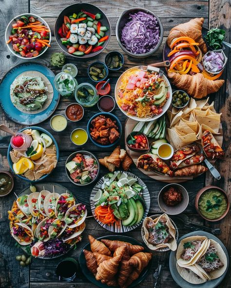
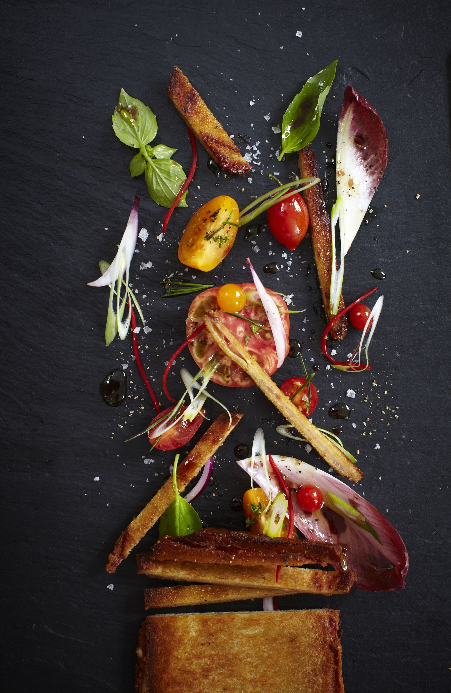
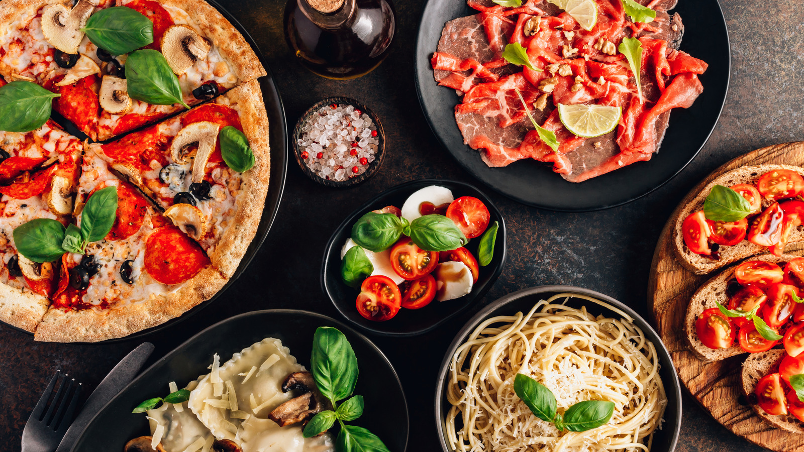

🌍
Кулинарное путешествие начинается здесь
Весь мир на твоей тарелке.
Откройте для себя вкусы разных стран, познакомьтесь с кулинарными традициями и приготовьте блюда, которые перенесут вас в другой уголок планеты.

✈️
100%
вкуса приключений
Новый вкус каждый день
Откройте рецепт для себя
4+
кулинарных направлений
12+
идей для приготовления
15–60
минут на приготовление
∞
возможностей для открытий

🥗
Готовь с удовольствием
Открывай новое
Наша философия
Больше, чем просто рецепты
Worldwide Recipe — это ваш проводник в мир гастрономии. Мы объединяем кулинарные традиции разных народов, чтобы каждый мог открыть для себя новые вкусы, не выходя из дома.
От итальянской пасты до японских суши — знакомьтесь с историей блюд, изучайте ингредиенты и пробуйте готовить по рецептам со всего света.
Путешествие по странам
Знакомьтесь с кухнями и традициями разных культур.
Готовить просто
Выбирайте блюда под свой опыт и свободное время.
Новые сочетания
Открывайте необычные ингредиенты и ароматы.
Вдохновение каждый день
Находите идеи для завтрака, обеда и ужина.
Кулинарная карта
Четыре страны —
Все рецепты
Четыре страны —
тысячи впечатлений
Каждая страна хранит свои секреты. Начните путешествие с одной из наших любимых кухонь.



Восточная Европа
Россия
Домашние супы, блины, сытные блюда и знакомые с детства вкусы.
Открыть кухню
Выбор гурмана
Попробуйте что-то новое
Подборка блюд, с которых приятно начать кулинарное путешествие. Выбирайте по стране, времени и настроению.
 🇮🇹 Италия
🇮🇹 Италия
Паста карбонара
Нежный яичный соус, сыр, чёрный перец и паста в итальянском стиле.
 🇯🇵 Япония
🇯🇵 Япония
Суши и роллы
Рис, нори и разнообразные начинки — знакомство с японской классикой.
 🇲🇽 Мексика
🇲🇽 Мексика
Мексиканские тако
Хрустящие лепёшки, свежие овощи, фасоль и пикантные соусы.
🇷🇺 Россия
Домашний борщ
Насыщенный овощной суп с характерным свекольным вкусом и ароматом зелени.
 🇮🇹 Италия
🇮🇹 Италия
Пицца «Маргарита»
Томатный соус, моцарелла и базилик — простая и любимая классика.
 🇯🇵 Япония
🇯🇵 Япония
Японский рамен
Ароматный бульон, упругая лапша и любимые дополнения в одной миске.
По вашему запросу ничего не найдено. Попробуйте другое название блюда или выберите другую страну.
Почему Worldwide Recipe
Открывать новое — легко
Мы хотим, чтобы знакомство с мировой кухней было интересным, понятным и доступным каждому.
Культуры мира
Знакомьтесь с кулинарными традициями стран, изучайте особенности ингредиентов и узнавайте больше о национальных блюдах.
Экономия времени
Выбирайте блюда по времени приготовления и сложности, чтобы найти подходящий вариант даже в загруженный день.
Понятные ингредиенты
Изучайте состав блюд и ищите идеи для приготовления из продуктов, которые подходят вашему меню.
Вдохновение без границ
Сохраняйте понравившиеся блюда, возвращайтесь к любимым идеям и каждый раз открывайте новые вкусы.
Ваше следующее приключение
Выбрать страну
Какую страну попробуем сегодня?
Выберите направление, найдите интересный рецепт и устройте маленькое гастрономическое путешествие у себя дома.